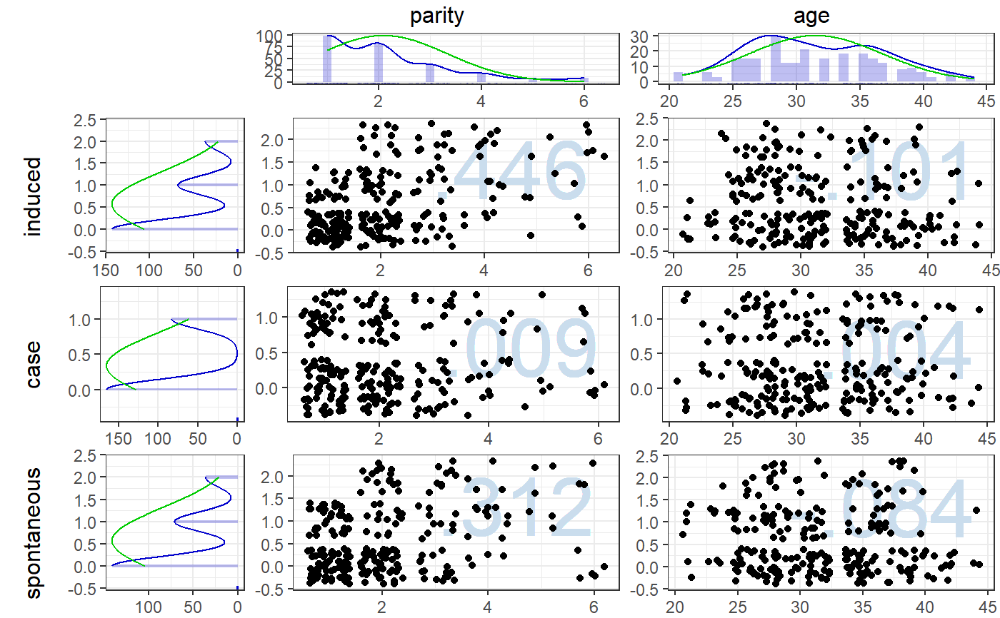

asymmetricalScatterMatrix
This function generates an asymmetrical scatterMatrix with
histograms showing the distribution of each variable.
asymmetricalScatterMatrix(dat, cols, rows, theme = dlvTheme(), autoSize = TRUE, txtHeight = 1, histHeight = 3, scatterWidth = 6, scatterHeight = 6, unit = "cm", dpi = 200, showCorrelations=c('top-left', 'top-right', 'bottom-left', 'bottom-right'), correlationSize = 15, correlationColor = "#cadded", pointSize = 1.5)
Arguments
| dat | The dataframe containing the items to show in the |
|---|---|
| cols | The variable names of the variables to place on the columns. |
| rows | The variable names of the variables to place on the rows. |
| theme | Which ggplot theme to use. |
| autoSize | Whether to resize the plot depending on the viewport (i.e. device that is
being drawn to) or whether to use the four measurements specified below
( |
| txtHeight, histHeight, scatterWidth, scatterHeight | These numbers are used to determine the space used for displaying the scatterplots, histograms, and labels in the final scatterMatrix. |
| unit | The unit in which txtHeight, histHeight, scatterWidth, and scatterheight are provided. |
| dpi | The DPI of the final plot. |
| showCorrelations | Where to display correlation coefficients; set to NULL to display no correlation coefficients. |
| correlationSize | The size(s) of the correlation coefficient(s). |
| correlationColor | The color of the correlation coefficient(s). |
| pointSize | The size of the points in the scatterplots. |
Value
A scatterMatrix, just not symmetrical.
Examples
asymmetricalScatterMatrix(infert, cols=c("parity", "age"), rows=c("induced", "case", "spontaneous"), showCorrelations="top-right");